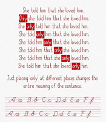

Monty Python - Always Look On The Bright Side Of Life (Official Lyric Video)
https://en.wikipedia.org/wiki/Four_color_theorem#Simplification_and_verification

"poke_a_moon";
will, go, to the polls, right now;
immediately;
Dragonball Zeno's paradox.
A diorama, has three dimensions; and time => (
link)
Benazir_bhutto_died.
https://www.youtube.com/results?search_query=aapki+nazro+ne+samjha+lyrics
https://www.youtube.com/results?search_query=ti+amo+song+umberto+tozzi+monica+belluci+lryics
The ammunition, should be related to Nobel_prize;
and, that's OK.
https://www.bbc.com/news/magazine-12503686
How 'OK' took over the world
https://www.bbc.co.uk/programmes/m00025bw
Emmy Noether, known_known
http://www.bbc.com/capital/story/20180723-the-commas-that-cost-companies-millions
Regarding, the abridgement =>
There’s a famous quote that says =>
"Anyone can design a bridge that stands.
It takes an engineer; to build one, that barely stands.”
As Proff. R. Feynman;
has pointed out,
every equation in the world can be written
U=0,
for some definition of
U — but it might not be useful.
http://www.preposterousuniverse.com/blog/
2013/01/04/the-world-of-everyday-experience-in-one-equation/comment-page-2/
https://en.wikipedia.org/wiki/Dydd_Santes_Dwynwen
[ This New Form of Light Is a Physical Molecule, Here’s How We Made It ]
https://phys.org/news/2020-03-rock-breathing-bacteria-electron-doctors.html

MARCH 6, 2020
'Rock-breathing' bacteria are electron spin doctors, study shows
by Darrin S. Joy, University of Southern California
Sahand Pirbadian studies how proteins in “rock-breathing” bacteria select electrons’ quantum spin. Credit: Tingting Yang
Electrons spin. It's a fundamental part of their existence. Some spin "up" while others spin "down." Scientists have known this for about a century, thanks to quantum physics.
They've also known that magnetic fields can affect the direction of an electron's quantum spin, flipping it from up to down and vice versa. And it doesn't take much: Even a bacterial cell can do it.
Researchers at USC Dornsife College of Letters, Arts and Sciences and Israel's Weizmann Institute of Science have found that protein "wires" connecting a bacterial cell to a solid surface tend to transmit electrons with a particular spin.
This ability to select an electron's quantum spin could have implications for the use of bacteria in the biotechnology industry and in burgeoning efforts to create bacteria-based energy cells, as well as future electronic technologies, they said.
Life on the rocks
Led by USC Dornsife's Moh El-Naggar, professor of physics and astronomy and chemistry, and Ron Naaman of the Weizmann Institute, the scientists have been studying certain bacteria that can use solid surfaces in the same way animals use oxygen to breathe. Instead of dumping electrons generated during metabolism onto inhaled oxygen molecules, the bacteria send the electrons down specialized proteins that plug into an external surface.
"Unlike most organisms that are able to use oxygen as the electron acceptor," said USC Dornsife Senior Research Associate Sahand Pirbadian, "these bacteria transfer the electrons to a solid mineral or, as they do in our lab, to electrodes that are outside the cell."
In terms of metabolism, they "breathe" the minerals or electrodes.
To reach the external surface, the electrons are shuttled through various protein molecules that form electrical conduits. These proteins have magnetic fields that can favor a particular spin as the electrons shuttle through.
Scientists found, says Pirbadian, that these magnetic fields are affected by a characteristic of the proteins called "chirality."
A few words about chirality
Many molecules, especially biological molecules, appear in two versions, each a mirror image of the other. Scientists call this "chirality." It's similar to human hands. Left and right hands have five fingers and a thumb, but they're not exactly the same. They're both hands, but they're mirror images of each other, oriented in opposite directions. Molecules can be the same way, and in fact, scientists refer to chiral molecules as being either left-handed or right-handed.
The left- or right-handedness of a protein may affect the polarity of the magnetic fields experienced by the electrons as they shuttle through the protein. That's what happens to those electrons that travel along a protein wire to get to the outside of a rock-breathing bacterium, according to the researchers.
"By the time the electrons traverse the molecule wire, the majority end up having the same quantum spin—up or down—depending on the chirality," said El-Naggar, who holds the Robert D. Beyer ('81) Early Career Chair in Natural Sciences. "This study is the first to confirm that the electrically conductive proteins in these cells are selecting the spin of electrons."
Putting the spin to use
El-Naggar and his colleagues have studied these "rock-breathing" bacteria, which one day might be used to produce sustainable energy, for years. Finding that the electron-conducting proteins in these bacteria can select for a particular electron spin based on their chirality could be useful in developing certain electronic devices called "spintronics," El-Naggar says. Spintronics use not only the charge of electrons but also their quantum spin and may be especially useful in quantum computing.
"There is an ongoing hunt for materials that can serve as the basis for new spintronic technologies," said El-Naggar. "Our work shows that bacterial cytochromes may be interesting candidates for spintronics."
Understanding how proteins affect electrons' quantum spin could also help the scientists understand how magnetic fields affect some biological processes.
https://www.quantamagazine.org/universal-method-to-sort-complex-information-found-20180813
https://www.quantamagazine.org/landmark-computer-science-proof-cascades-through-physics-and-math-20200304/
https://en.wikipedia.org/wiki/Percolation
https://youtu.be/vx2u5uUu3DE
Barbara Pierce Bush, got married, to a screen_writer.
============================================
Script from the Middle sitcom =>
Look, Brick, when you're a man, you'll know.
There's no exact date.
You just, you know feel it.
So when did you know? [Inhales deeply.]
Well, I guess when I was 16 and my mom died.
Makes you grow up fast.
Is there another way? 'Cause I'd really rather not have to kill off Mom.
[Chuckles.]
You know, Brick, there is something.
In some cultures, a boy becomes a man when he learns how to take out the trash by himself and replace the bag.
https://www.springfieldspringfield.co.uk/view_episode_scripts.php?tv-show=the-middle&episode=s07e16
Monty Python - Always Look On The Bright Side Of Life (Official Lyric Video)


{kind=link}
{kind=link}
{kind=link}
{kind=link}
{kind=link}
{kind=link}
{kind=link}
{kind=link}
{kind=link}
{kind=link}
{kind=link}
{kind=link}
{kind=link}
{kind=link}
{kind=link}
{kind=link}
{kind=link}
{kind=link}
{kind=link}
{kind=link}